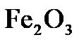
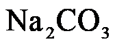

2023年北京中考化学 第17题 解析
17. 向分别盛有下列物质的点滴板孔穴中滴加足量稀硫酸，无明显现象的是
A.

B. FeC. 稀溶液D. 
溶液【答案】C
【解析】
【详解】A、稀硫酸与氧化铁反应生成硫酸铁和水，可观察到固体逐渐溶解、溶液变为黄色，不符合题意；
B、稀硫酸与铁反应生成硫酸亚铁和氢气，可观察到固体逐渐溶解、溶液变为浅绿色、有气泡产生，不符合题意；
C、稀硫酸与氢氧化钠反应生成硫酸钠和水，该反应无明显现象，符合题意；
D、稀硫酸与碳酸钠溶液反应生成硫酸钠、二氧化碳和水，可观察到有气泡产生，不符合题意；
故选C。